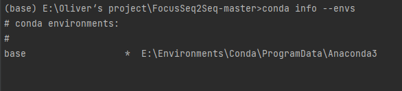
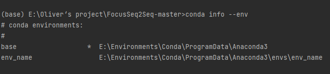
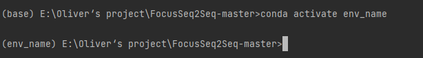

Python 工程环境管理
便捷管理多项目环境
前言
在Python工程中，特别是对于要复现一些项目时、需要测试特定环境下程序表现时、同一个服务器上多人进行跑程序时需要自己的独立环境时等，我们可能需要用到特定版本的库，而这时，我们可以使用虚拟环境安装依赖。这样依赖，我们就不会影响到主环境，诶这样就
- 不用重复卸载重装主环境，
- 也不会使得主环境日渐臃肿；
- 还可以安装多版本python（如经典的pyenv 包管理软件便可以实现）；
- 如有需要直接删掉虚拟环境，然后建新的即可。
由于系统配置的不确定性，建议友友们在linux下食用。
环境管理途径介绍
环境需要用到的包可以写入requirements.txt文件里，如果是从另一个工程环境切换过来，可以在那个环境中运行
|
|
然后在需要配置的环境中运行如下命令进行安装大部分需要的包
|
|
此方法会忽略报错进行pip包的安装，会出现包的缺损，后续可以自行补上。
镜像源
|
|
Conda
- 查看我们当前conda里有的环境 ，三种方式都可👇🏻
|
|
输出如下👇🏻
- 可以看到，我们目前只有一个base的基础环境。接下来我们试着查看一下该环境下的包列表👇🏻

Conda创建虚拟环境
创建时指定 conda下的虚拟环境名字为env_name，python版本为3.6👇
|
|
或者，你也可以通过yml文件来构建自己想要的环境，比如你想要如下配置的环境（name指的是你的虚拟环境叫啥，与上条命令中的env_name效果一样）👇

那么，你则需要在当前目录创建一个yml后缀的文件，然后写入上图类似的你需要的环境内容，并运行如下命令👇
|
|
再次查看conda下的环境列表

可以看到创建了一个新的env_name环境。
Conda激活虚拟环境
输入activate指令👇
|
|
可以看到

命令行前的括号内容已经改变(base)👉(env_name)，此时已经是基于该虚拟环境了。
然后呢，我们就可以进入这个环境乱装一通了，此处省略一万行操作……
好了，这个环境的使命已经结束了，我们再把它删掉👇
|
|
Python Virtualenv
这是一款python自带的虚拟环境管理方案，那么我们为啥不用conda呢？conda多好，自带包又多，多省事。问题就是，有些情况下我们不需要任何一个多余的包，在工程上即便是多余一个包也是对存储空间的浪费，conda内部我不是很清楚还封装了什么，但总是给人一种很健壮的感觉，怕麻烦的话推荐conda，但是有洁癖的人推荐自己逐步搭建相关依赖。现在介绍的这款就是官方给的，诶，干净。需要注意的是，如果你需要在多个python版本上建立虚拟环境，那么比较麻烦，下节会说，建议直接移步下一节的pyenv。（Python Virtualenv官方文档#）
此方案中虚拟环境的创建方式和conda差不多，这里介绍指定环境路径的方法，其中env_path为你要保存该虚拟环境的路径
|
|
然后可以激活此环境
|
|
关闭环境
|
|
Pyenv
推荐食用
Pyenv是一个开源的python环境管理软件（源码链接），它十分方便可以实现我所说的虚上加虚。诶？啥意思呢？如果我们把创建虚拟环境的环境称为底座，那么很显然，本地环境通常只能满足一两个python版本，那么我们在上一节的Python Virtualenv环境管理方案就只有一两个底座，它就是本机已经安装的python版本，当然，你也可以将多个不同版本的python装到不同的文件，然后加不同的启动命令比如python2.x和python3.x来使用，但这并不好管理，且较为麻烦。而且，就像之前说的，会使得对于有洁癖的友友很不好受，不能一揽全局。那么我们就可以使用Pyenv，创建虚拟环境，因为它可以用来安装不同版本的python，conda，miniconda等，写到这里博主忽然觉得Pyenv好像就是在套壳上述两种方法，但是便捷性提升很多，故我们就相当于创建了不同的底座，使用Pyenv来统一管理👇

安装
Linux👇
|
|
|
|
离线部署
先使用能够科学上网的机器下载release https://github.com/pyenv/pyenv
然后放到需要部署的机器上上
|
|
MacOS
|
|
Windows
pyenv官方没有支持windows，推荐使用pyenv-win（github地址）
- windows下推荐使用pip安装pyenv-win
|
|
- 或者下载zip文件然后解压到
%USERPROFILE%\.pyenv\pyenv-win下
食用方法
查看可以安装的相应版本的环境（一般只有数字的选项默认指python环境）
|
|
安装所需要的,如选择python3.6.15环境
|
|
借助镜像源安装
|
|
激活所需要的（此处可以直接激活前文中二级底座的虚拟环境）
|
|
暂时将某个环境应用到所有目录的命令行下
|
|
进入某个目录时，命令行自动切换到对应环境的方法
- 在这个目录新建一个名为
.python-version的文件 - 在其中写入你希望激活的环境名称
退出环境
|
|
删除环境（一级底座）
|
|
基于某个环境建立虚拟环境并取虚拟环境名
- 可以先激活这个环境，然后在这个环境下创建，激活，退出，删除虚拟环境
- 也可以不激活，直接使用pyenv命令
在一级底座上创建虚拟环境
|
|
然后激活虚拟环境
|
|
退出虚拟环境
|
|
删除虚拟环境（二级底座）
|
|